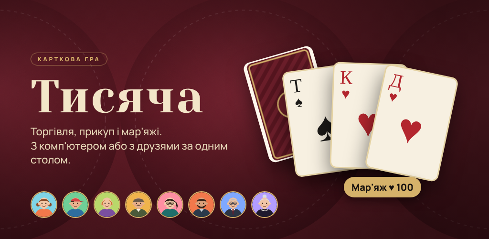

Dawikk
ТИСЯЧА
Класична карткова гра до 1000 очок: торгівля, прикуп, мар'яжі, козирі й розписи. З комп'ютером на восьми рівнях або з друзями за одним столом – навіть без інтернету.
Гра з комп'ютером
Вісім персонажів: від Тосі, яка тільки знайомиться з картами, до Адвокатки, що прораховує кожну роздачу до кінця. Грають 2, 3 або 4 гравці. Рушій рахує на телефоні, без сервера.
Правила на Ваш смак
Українські й російські (торгівля по 5, бочка 880, три нулі), польські домашні або як на kurnik.pl. Кожне правило – перемикач. Доповнення: 555, чотири тузи, гра в темну.
З друзями через Wi‑Fi і Bluetooth
2–4 телефони за одним столом, без інтернету й акаунтів. Приєднуйтеся зі списку, за кодом або QR-кодом. Вільні місця можуть зайняти боти, а якщо хтось від'єднається, бот грає за нього до повернення.
Тренування, історія та оцінка рішень
Підказки рушія в тренуванні з комп'ютером, історія кожної роздачі з повтором і оцінка Ваших рішень. Для початку – навчання: одна роздача крок за кроком.
Роздача дня і профіль
Щодня однакові карти для всіх. Ранги від Ста до Тисячі, статистика й відзнаки – окремо також для гри з друзями.
Для кожного
Українська, англійська, польська й російська. Гра працює без інтернету. Описи для програм зчитування з екрана, великі області дотику й тексти без прив'язки до статі.

Незабаром у Google Play і App Store.